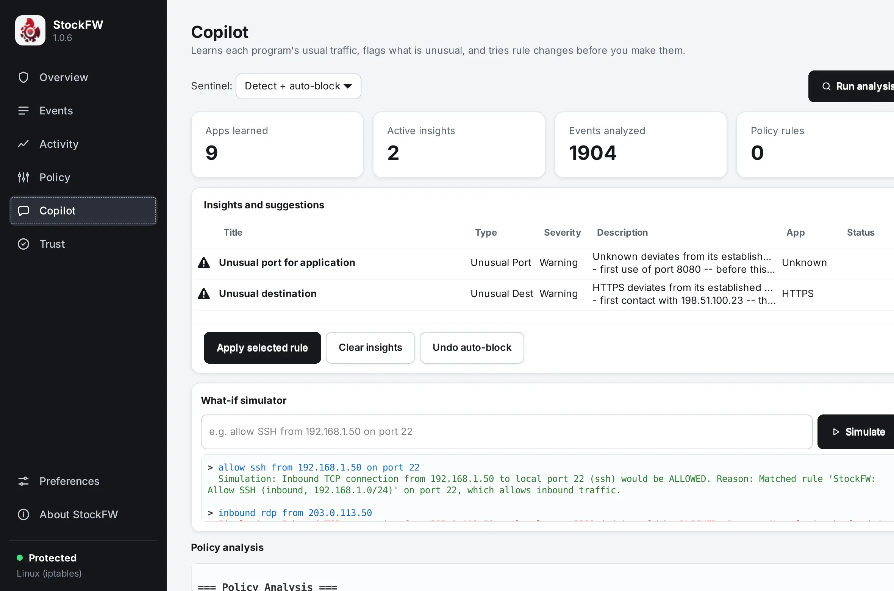
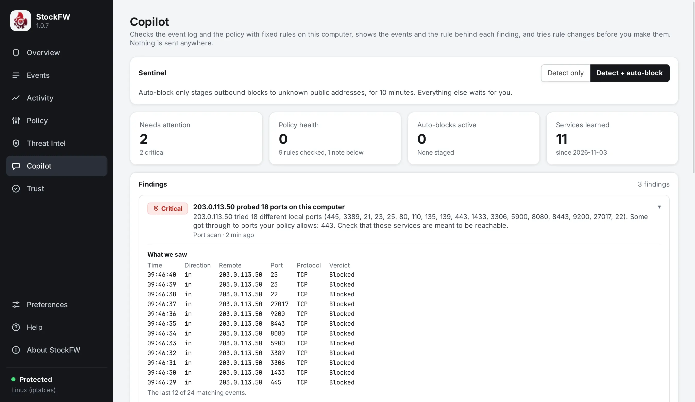
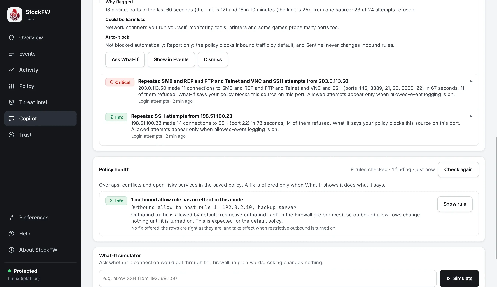

Copilot
A set of fixed rules that run on this computer over the event log and the saved policy. It is not an AI model and has no network, no account and no prompt: it works on an air-gapped machine, sends nothing anywhere and cannot be talked into anything. Every finding names the rule that raised it, the numbers it measured next to the limits, and the events behind it.

What is on the page#
- Sentinel: Detect only or Detect + auto-block, with one sentence on what auto-block can do. Auto-block only stages outbound blocks to unknown public addresses, for ten minutes; everything else waits for you.
- Four tiles: Needs attention counts the Critical and Warning findings; Policy health counts the health check's findings, leaving out the expected “no effect in this mode” notes; Auto-blocks active; and Apps learned, or Services learned on Linux, where the log names no program.
- Findings: each row has a severity pill, a title, one sentence on what was seen, and the check and time. Click a row, or press Enter on it, to open its evidence drawer.
- Policy health: overlaps, conflicts and open risky services in the saved policy, with Check again, Show rule and, where one is safe, Fix.
- What-If simulator: a question about a connection in plain words. It has its own page.
- Changes made by the Copilot: every block it staged and every fix it made, newest first, each with Undo. An undone change, and a block that lifted, stay in the list marked with how and when they ended; the last 100 are kept.
The list follows the events once a second and is updated in place: a row is rebuilt only when what it shows changed, and the keyboard focus stays on the same control. When there is nothing to show, the page says why: no events yet, monitoring off with the reason the Events page gives, or “No findings from N events… This is not a guarantee that nothing is wrong”, with the list of what is checked. Verified fs-copilot-smoke
The evidence drawer#


Every drawer has the same parts: What we saw, the events behind the finding; In full, the whole story in prose; Why flagged, the measured numbers next to the limits; Could be harmless, the innocent explanation; and Auto-block, what Sentinel did or why it did not. The text can be selected and copied, and a click inside the drawer does not close it. The actions:
- Block outbound to this address
- Offered only when What-If says the finding's connection is ALLOWED now and BLOCKED with the row, checked again just before writing, and confirmed in a dialog that prints the literal row. The row is saved with rollback on failure, pushed through the apply gate, audited, and listed under Changes with Undo.
- Ask What-If
- Puts the finding's connection into the What-If card, so you can see what the policy would do with it. A finding about an address a blocklist or a country rule already blocks has no such button, because What-If does not consult the lists and the address is blocked already.
- Show in Events
- Opens the Events page filtered to the finding's events.
- Dismiss
- Takes the finding off the list for this session. Dismissals are not saved.
The checks#
Counting is per program on Windows, where the Security log names the program. On Linux the kernel log names no program, so the key is the port's service name, https or ssh, and several programs on one port share one history. These checks run on every event and need no history:
| Check | Trigger | Severity |
|---|---|---|
| Port scan | One source reaching 12 distinct local ports in a minute, or 25 in ten minutes. The addresses of one IPv6 /64 are also counted together. One new report per source per hour; later probes update the open finding. | Info when every probe was refused, Warning when any reached an allowed port |
| Login attempts | One source, 10 inbound attempts in five minutes across SSH, RDP, VNC, Telnet, FTP and SMB, on their usual ports and on the ports your inbound rules give those services. | Critical when the policy lets that source in on one of those ports and some attempts were refused; Warning or Info otherwise, and the sentence says which case applies |
| Timed contacts (beacon) | Outbound only. Six or more contacts with one destination, port and protocol at a mean interval of 10 seconds to 10 minutes and a spread of at most 30 percent of the mean. Time sync and DNS to this computer's own resolvers are never timed. | Warning; Critical when a blocklist or country rule also matched it |
| Fan-out | Outbound, per program: 60 distinct hosts, or 10 distinct refused hosts, within a minute. Where the key is a service name, only the refused hosts count, because a busy page in any browser reaches 60 hosts. | Warning |
| Blocklist hit | An event a threat-intel list or a country or network rule blocked. See Threat intel. | Warning for outbound; inbound drops roll up into one Info finding per list per hour |
Once a program or service has ten recorded events, four baseline signals join in: the first use of a port, a new public destination (after 50 connections over seven days, and not for a key that meets 20 new hosts a week), the first activity in an hour of the day, and a connection rate more than three times the usual. One signal is Info, two or more are Warning, and a baseline finding never carries a rule: an unusual connection is not answered with an allow, and a block is your decision. Two different checks on the same subject within an hour make both findings Critical. The list holds at most 200 findings. Verified test-core.sh
The baseline is written to behavior.csv by the five-minute save as well as on quit, so a crash loses at most five minutes of learning. It is bounded to 256 programs, 256 ports and 1,024 destinations each; a profile that hits a cap is marked partial and the novelty signals go quiet for it, because a truncated baseline cannot honestly claim “never seen before”.
Policy health#
A pure check over the saved policy, run when you open the page and on Check again. Coverage is exact: the same direction, every protocol and port inside, every address inside; a row that names a host by name never covers anything.
| Check | Severity | Fix offered |
|---|---|---|
| Duplicate: the same rule twice | Info | Remove the later copy |
| Shadowed: an earlier rule with the same action already covers it | Info | Remove the shadowed row |
| Unreachable: an allow covered by a deny | Warning | None: you meant one of the two, so both are shown |
| No effect: outbound allows while outgoing is allowed by default | Info | None |
| Broad: an inbound allow from anyone over more than 100 ports | Warning | Narrow to the local network |
| Risky service open to anyone: FTP, Telnet, RPC, NetBIOS, SMB, SQL Server, Docker, MySQL, RDP, PostgreSQL, VNC, Redis, Elasticsearch or MongoDB (SSH is Info) | Critical | Narrow to the local network |
| Reaches no family: a host name on Windows, a forward to a name or a range | Warning for a deny, which silently blocks nothing | None |
Every fix is tried by the What-If engine before it is offered: a set of probes is answered against the policy as it is and with the fix made. A removal is offered only if no verdict changes; a narrowing only if every local-network probe keeps its answer and the outside probe goes from ALLOWED to BLOCKED. Otherwise the finding says “No fix offered” and why, as the note in the screenshot does. Fix shows the before and after rows and the checks, asks, writes through the apply gate, and can be undone from Changes by content, not by position. The same check runs from the command line as stockfw copilot health. Verified test-health.c
Sentinel: the one automatic action#
With Detect + auto-block, the default, a beacon's deny rule can be staged into the policy and pushed through the apply gate without waiting for you. Because that is the one place where StockFW acts on its own, it is fenced on every side:
- Only a beacon, only a deny, only for a public stranger. The finding needs at least eight contacts. The destination is never loopback, link-local, multicast, a private range, carrier NAT, a reserved range or anything that does not parse as an address; never one of this computer's DNS servers or gateways; never a host your policy allows outbound by name, because on Windows a block outranks an allow; and never a host this program, or any other program, had three or more connections with before. The gates are judged when the finding is made and again at the moment it stages. Verified test_sentinel_auto_gates
- Ten minutes. Every staged block lifts ten minutes after it was staged, whether or not the window is shown. The staging record is written to the
autoblocksfile, so a block survives a restart with its original clock, and a block that expired while StockFW was closed is taken out at the next start, or bystockfw startat boot, with an audit line. Verified fs-copilot-smoke - No loops. Once a block is taken down, by expiry, by Undo, by your own Allow or by switching to Detect only, the same rule is not staged again in this session.
- Your Allow wins. Allowing a destination from the Events page or from What-If lifts any Sentinel block for it before the allow is pushed.
- Detect means detect. Switching to Detect only, or Pause Sentinel in the tray menu, takes every staged block down at once.
- Your rules are never touched. Sentinel removes only rows it staged itself.
The adversarial suite plays a blocked port scan, a port sweep, a command-and-control beacon, a replay of a real incident, benign developer tools and an exfiltration burst through the detectors, and asserts that only the beacon would ever reach the firewall unattended. Verified test-adversarial.sh
The audit trail#
Every stage, push, undo, expiry, restore at start-up, mode switch, health fix and manual block is one line in audit.log, which is only ever appended to. Files and formats describes the line.
Honest limits#
- The Copilot sees only what the firewall logs. On Linux accepted connections are logged at most ten a second and an explicit deny row is not logged at all; Windows is read every five seconds, so beacon intervals are known to within about five seconds. A slow or low-volume pattern can stay below every limit.
- Without “Log allowed connections” on Linux, or with auditing turned off by policy on Windows, only refused traffic is seen.
- On Linux two programs on one port are one key, and the tile says Services learned. Known gap
- The scan and login checks remember at most 1,024 sources each; a scan spread over more addresses than that, or over many IPv4 addresses each below the limits, is not reported.
- On Windows no event names the rule that blocked it, so the blocklist check is silent there. Known gap
- No finding means none of the checks matched, not that the computer is safe. The page says so.